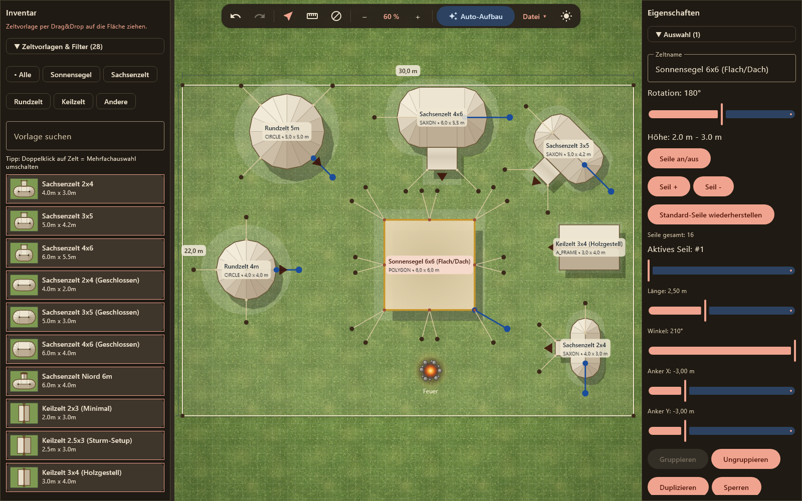
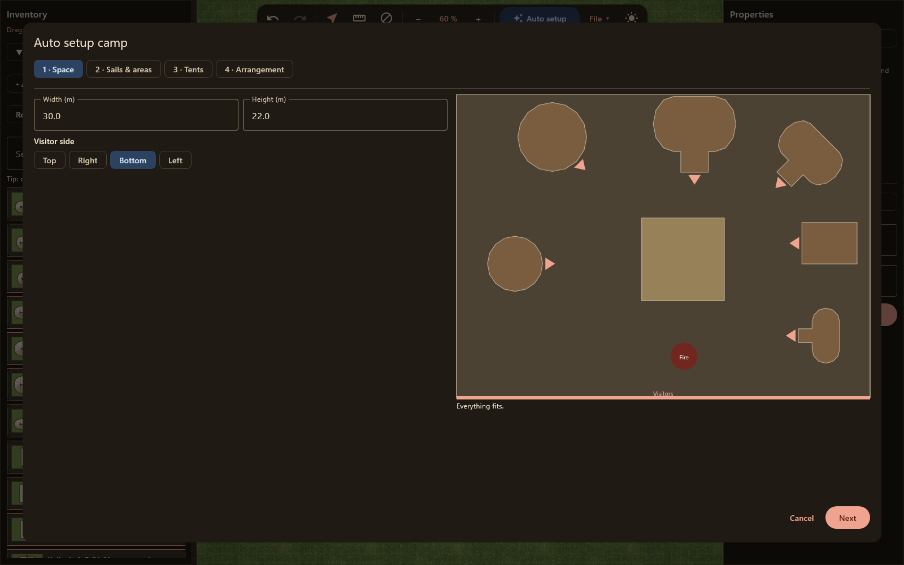

Plan your camp before you get there
Lay out Saxon tents, round tents, wedge tents and sun sails on a to-scale plot. See right away where guy ropes cross or an entry is blocked, or let the auto setup draft the whole camp for you. For Android and desktop (Windows, macOS, Linux).
Download Source on GitHub
Features
Plan to scale
- Plot size in metres, with a measure tool to check distances.
- 28 tent and sun sail presets, searchable and filterable. Drag them onto the plot.
- Move, rotate, duplicate, group and lock tents. Undo and redo for every step.
Real tents, real ropes
- Every tent has guy ropes and a door. Change their length, angle and anchor point, or add and remove ropes.
- Top-down art for tents, sun sails and fire pits, on a grass background.
Checks while you plan
- Tent bodies or ropes that run into other tents are marked red.
- Blocked entries and walkways narrower than your setting are marked orange.
- Draw your own no-go zones for trees, paths or a neighbour's space.
Auto setup
- Give it the plot, visitor side, sun sails, fire pit and your tents. It drafts the camp: horseshoe, circle, U-shape, along the edges or spread out.
- Live preview. If not everything fits, it shrinks walkways and tells you which tents were left out.
Share it
- Export the layout as PNG, or as a project file to open on another device.
- English and German, light and dark theme, keyboard shortcuts on desktop.
Auto setup

On your phone